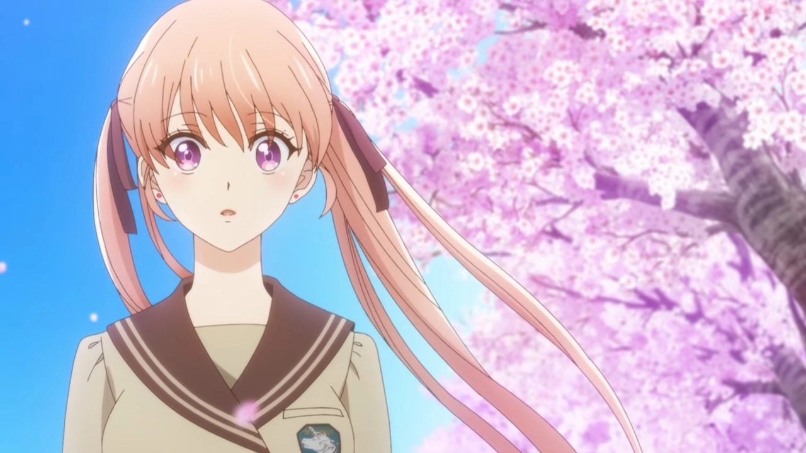

El doblaje latino de Kakkou no Iinazuke se estrenará esta semana
La plataforma Crunchyroll anunció que el doblaje al español latino de la adaptación al anime del manga escrito e ilustrado por Miki Yoshikawa, Kakkou no Iinazuke (A Couple of Cuckoos), se estrenará el próximo sábado, 14 de mayo de 2022, en el catálogo de la plataforma. El comunicado de prensa reveló también al elenco de doblaje, que incluye:
Diego Becerril como Nagi Umino.
Ana Lucía Ramos como Erika Amano.
Vanessa Olea como Hiro Segawa.
Estefanía Piedra como Sachi Umino.

Tráiler y nuevos detalles de la película de Takagi-san
El sitio web oficial del anime Takagi-san, experta en bromas pesadas ha publicado un nuevo tráiler para la película Gekijōban Karakai Jōzu no Takagi-san, cuyo estreno en Japón será el próximo 10 de junio. Este vídeo promocional de un minuto de duración contiene un adelanto del tema principal de la producción, la canción es interpretada por Yuiko Ōhara y lleva como título «Hajimari no Natsu».
El equipo encargado de la tercera temporada del anime participa en este largometraje. Así, Hiroaki Akagi dirije la película para el estudio Shin-Ei Animation y Hiroko Fukuda (Amanchu! Advance) está acreditada como guionista con la colaboración Aki Itami (Las flores del mal) y Kanichi Katou (Black Clover, Idol Time PriPara), quienes escriben para la tercera temporada. Aya Takano trabaja de nuevo en el diseño de personajes y Hiroaki Tsutsumi vuelve para componer la música.
Kawaii dake ja Nai Shikimori-san sufrirá varios retrasos por culpa del COVID-19
Hace ya uans cuantas semanitas que se informó de que Doga Kobo, el estudio encargado de animar "Kawaii dake ja Nai Shikimori-san" y que, honestamente, hace un trabajo excepcional con todos los slice-of-life que toca, había tenido que cerrar temporalmente a consecuencia de un brote de COVID-19. No obstante, pasaron las semanas y en ningún momento se volvió a hacer mención de ello... hasta el día de hoy, pues desafortunadamente ya tenemos las consecuencias de aquellas malas noticias.
En esencia, "Kawaii dake ja Nai Shikimori-san" verá retrasados algunos episodios de su primera temporada, aunque por fortuna ya se ha confirmado cómo queda el calendario de emisión bajo este nuevo escenario (vía ANN):
14 de mayo - Episodio 6 del anime
21 de mayo - Se vuelve a emitir el episodio 1 del anime pero con algunos comentarios de audio
28 de mayo - Episodio 7 del anime
4 de junio - Episodio 8 del anime
11 de junio - Recopilación de escenas favoritas con los seiyuus del anime
18 de junio - Episodio 9 del anime
25 de junio - Episodio 10 del anime
2 de julio - Episodio 11 del anime
9 de julio - Episodio 12 del anime
Como podéis ver, dentro de lo malo la situación no es que sea terrible ni mucho menos; en total son dos capítulos los que se verán retrasados respecto a la emisión original, pero por lo menos en el segundo retraso se hará una especie de contenido especial junto a los actores de voz que dan vida a los personajes de "Kawaii dake ja Nai Shikimori-san". ¿Es mejor que un nuevo episodio? Pues obviamente no, pero es de agradecer que dentro de las circunstancias excepcionales se haya buscado dar un pequeño extra.
Nintendo Switch ya superó las ventas de PlayStation 4 en Estados Unidos
Nintendo Switch es una consola realmente exitosa que sigue cosechando éxitos en diferentes partes del mundo. Ahora la consola híbrida de Nintendo logró algo impresionante: superar las ventas de PlayStation 4 en Estados Unidos. De acuerdo con cifras de NPD Group, Nintendo Switch ya vendió más unidades en Estados Unidos que el PlayStation 4 que Sony. Con esto, la consola híbrida suma otro importante éxito y sigue consolidando su lugar como una de las consolas de videojuegos más exitosas de toda la historia.
Con lo anterior, Nintendo Switch ya es la cuarta consola de videojuegos más vendida de la historia en Estados Unidos. La híbrida de Nintendo sólo está detrás del PlayStation 2, Xbox 360 y Nintendo Wii. Está por verse si en algún momento llega a superar a estos gigantes.